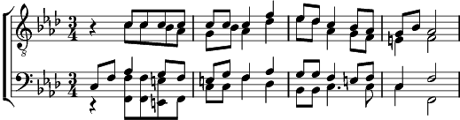

Qu'on me rende à cette terre
Fa mineur
Paroles: Maurice Budry
Arrangement: Alexandre Vassilievitch Aleksandrov

Qu'on me rende à cette terre
Au demain de ma mort
A ce sol dur de mes pères
Où reposent leurs corps.
Sur ma tombe solitaire
Soufflera le vent froid
Et du grand fleuve en colère
Là-bas gronde la voix.
Quant à vous, sonnez l'alarme
Et brisez tous vos fers!
Et bientôt : Adieu les armes
Il se lève un jour clair.
Vous verrez, alors, mon âme
Se jouer dans le vent ;
Je serai comme la flamme
D'un épi dans vos champs.